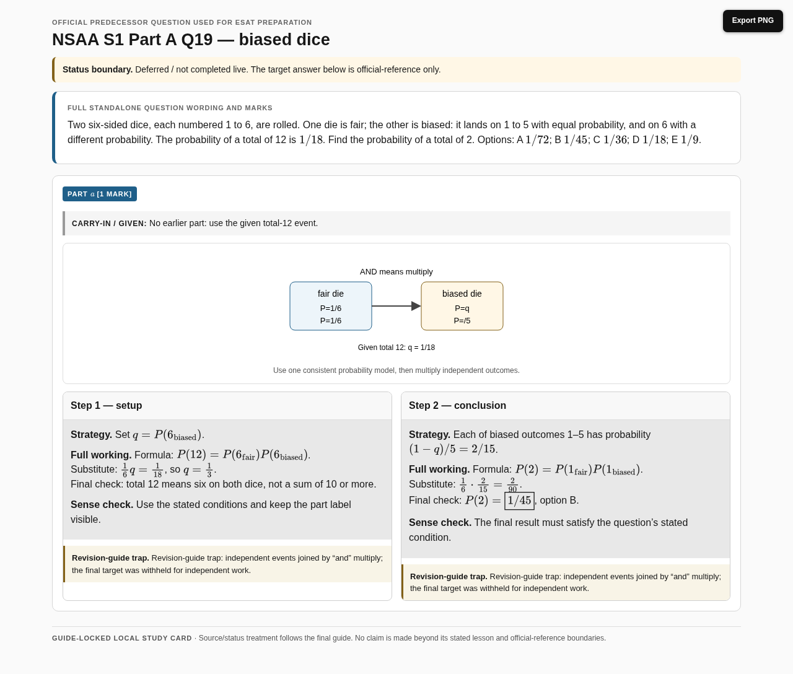
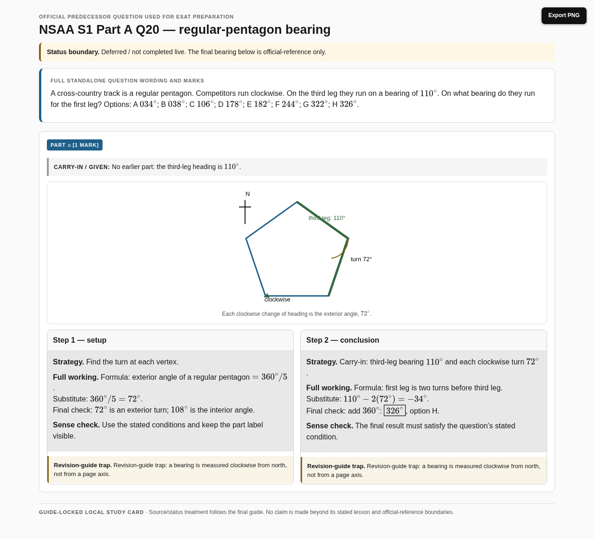
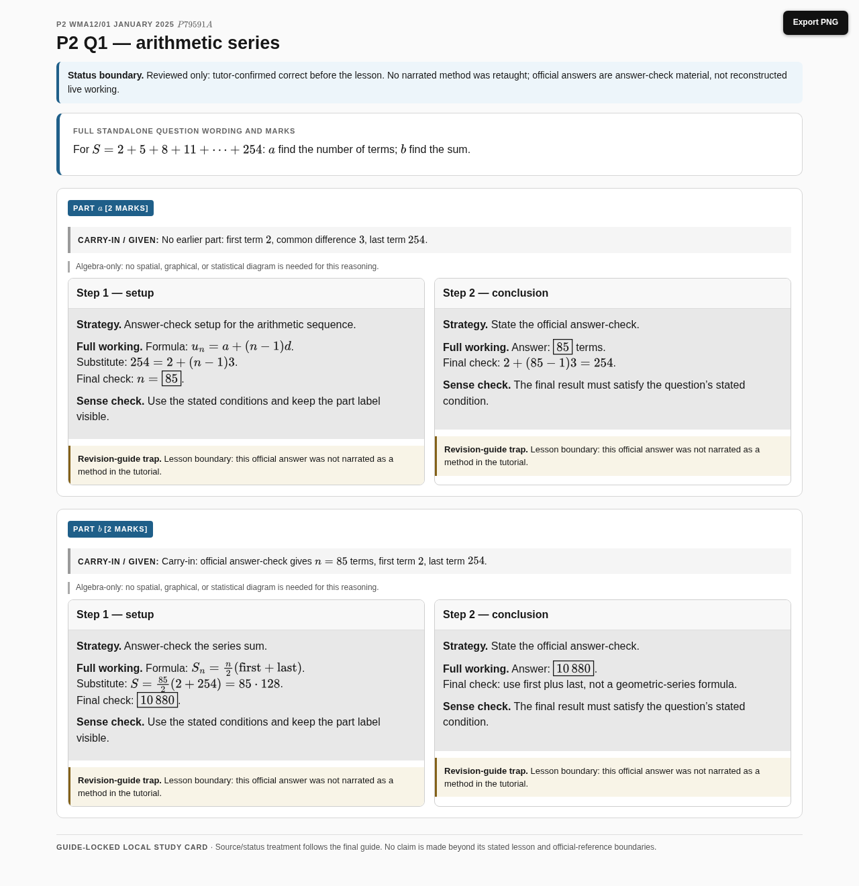
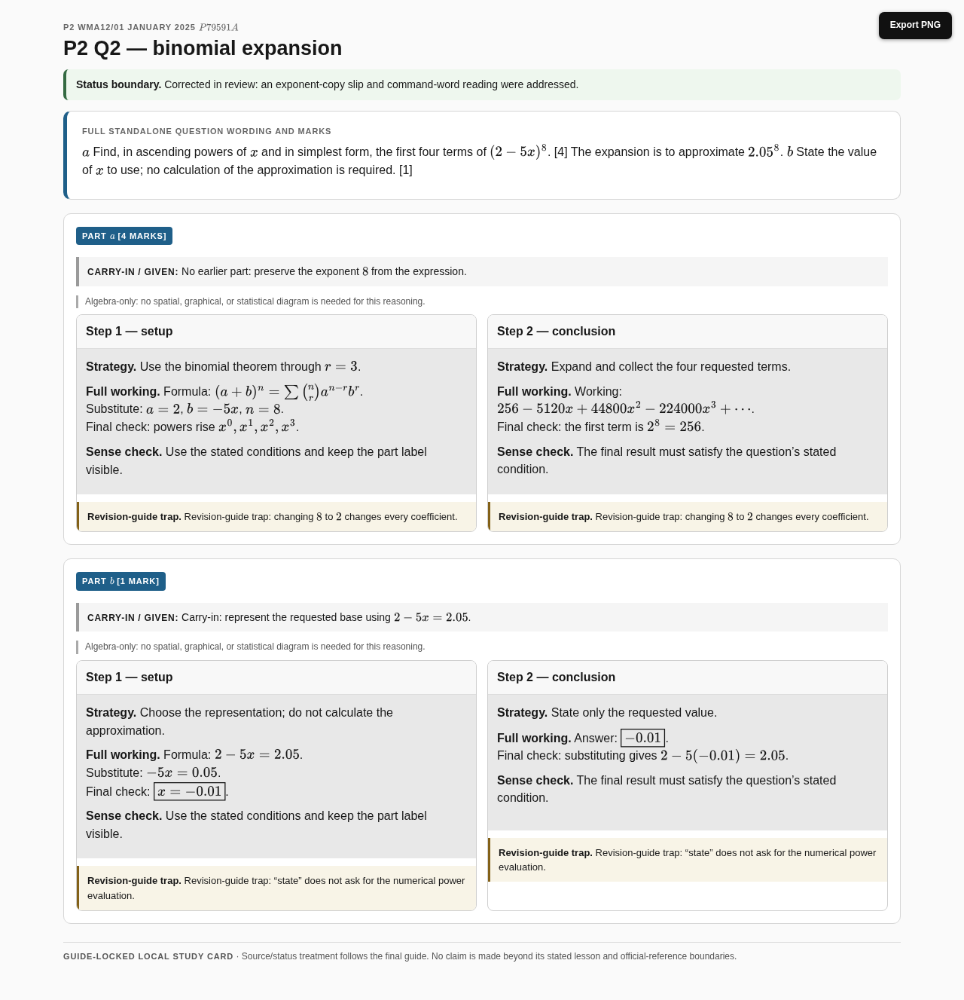
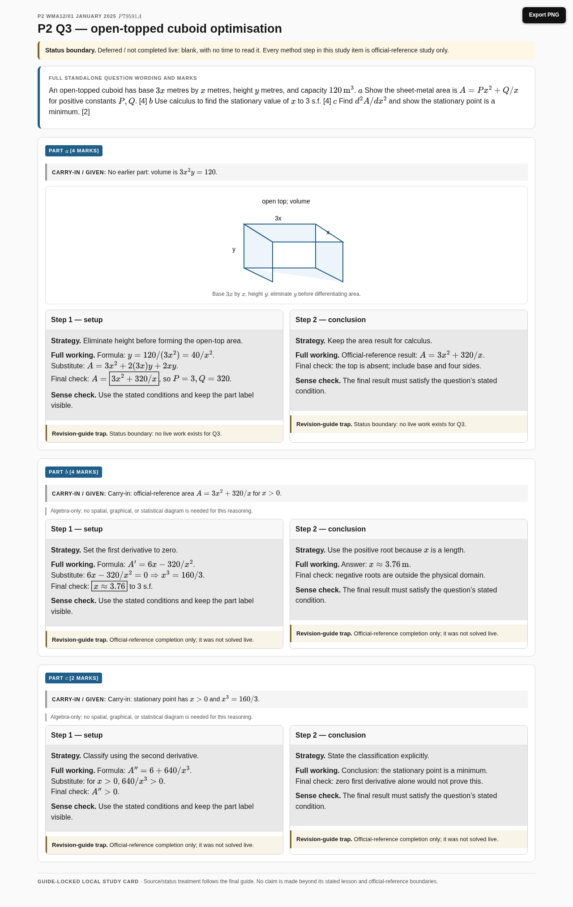
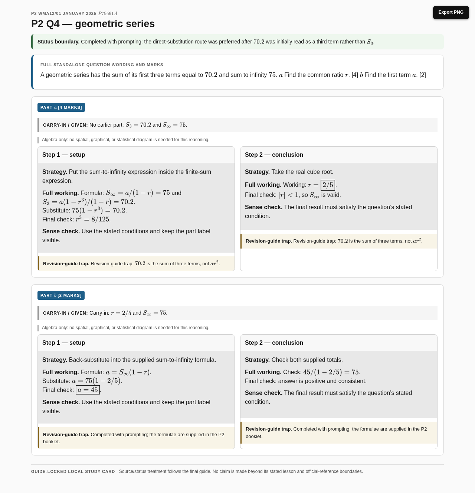
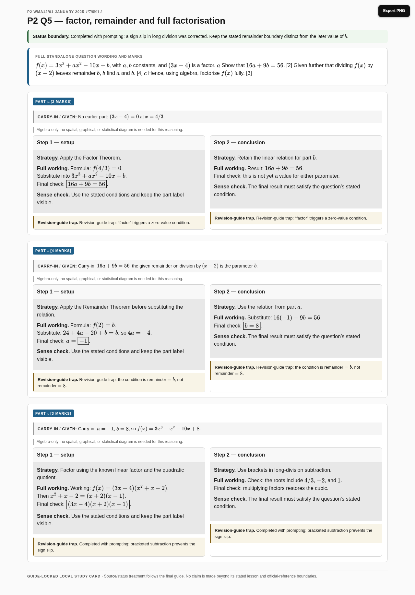
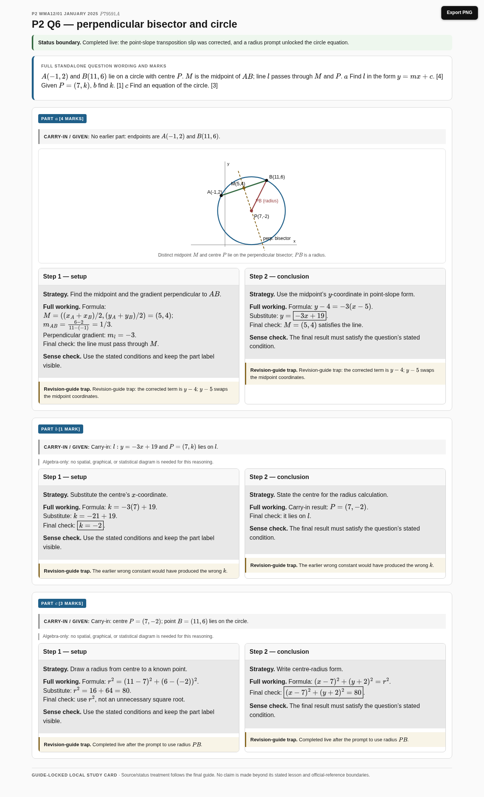
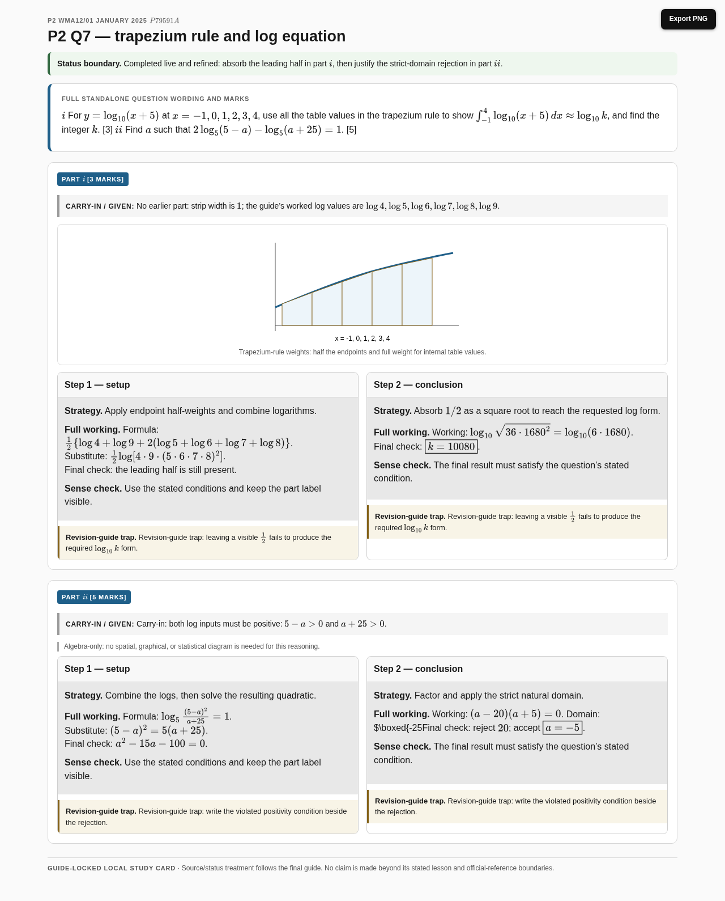
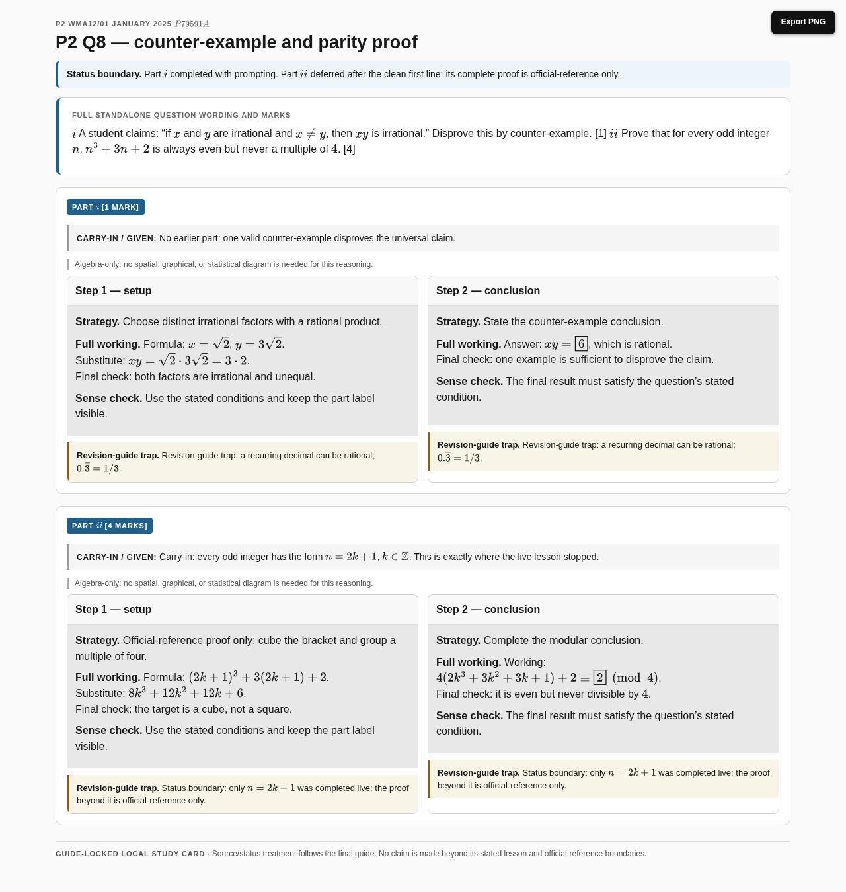

NSAA S1 Part A Q19 — biased dice
Deferred / not completed live. The target answer below is official-reference only.
Open multi-step card · PNGd1c96c58d9e672a52cac4c81cfc82188e36833f99081ec98da6ddb7f3fa9515f. Protected official-reference boundaries are carried card-by-card for NSAA Q19, NSAA Q20, P2 Q3 and P2 Q8(ii). Publication status: local only.
Deferred / not completed live. The target answer below is official-reference only.
Open multi-step card · PNG
Deferred / not completed live. The final bearing below is official-reference only.
Open multi-step card · PNG
Reviewed only: tutor-confirmed correct before the lesson. No narrated method was retaught; official answers are answer-check material, not reconstructed live working.
Open multi-step card · PNG
Corrected in review: an exponent-copy slip and command-word reading were addressed.
Open multi-step card · PNG
Deferred / not completed live: blank, with no time to read it. Every method step in this study item is official-reference study only.
Open multi-step card · PNG
Completed with prompting: the direct-substitution route was preferred after $70.2$ was initially read as a third term rather than $S_3$.
Open multi-step card · PNG
Completed with prompting: a sign slip in long division was corrected. Keep the stated remainder boundary distinct from the later value of $b$.
Open multi-step card · PNG
Completed live: the point-slope transposition slip was corrected, and a radius prompt unlocked the circle equation.
Open multi-step card · PNG
Completed live and refined: absorb the leading half in part (i), then justify the strict-domain rejection in part (ii).
Open multi-step card · PNG
Part (i) completed with prompting. Part (ii) deferred after the clean first line; its complete proof is official-reference only.
Open multi-step card · PNG